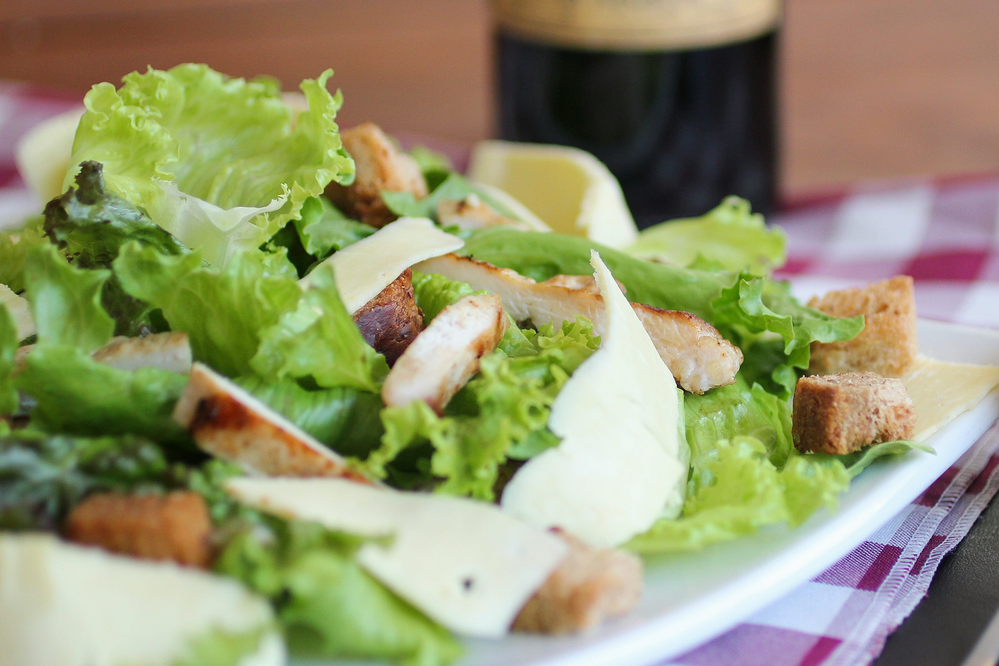

En esta página encontrarás información sobre las recetas, incluyendo ventajas y desventajas de cada plato.
Nos dedicamos a compartir recetas de cocina de todo el mundo para que puedas disfrutar de la comida casera y de calidad en tu hogar.
Recetas
Pasta al pesto
La pasta al pesto es un plato italiano que combina pasta con una salsa fresca hecha de albahaca, ajo, piñones, queso parmesano y aceite de oliva.
Es fácil de preparar, versátil y ofrece un sabor vibrante y delicioso.
Ventajas:
Sabor delicioso: El pesto tiene un sabor fresco y vibrante gracias a la albahaca, el ajo, el queso parmesano y los piñones.
Fácil de preparar: El pesto es fácil y rápido de hacer, solo necesitas una licuadora o procesador de alimentos.
Ingredientes saludables: La albahaca es rica en antioxidantes, el ajo tiene propiedades antibacterianas, y los piñones y el aceite de oliva son fuentes de grasas saludables.
Versatilidad: El pesto puede usarse no solo en pasta, sino también en sándwiches, ensaladas, y como aderezo para carnes y vegetales.
Apto para vegetarianos: Es una opción excelente para quienes siguen una dieta vegetariana.
Desventajas:
Calorías y grasas: Aunque las grasas del aceite de oliva y los piñones son saludables, el pesto puede ser alto en calorías y grasas, lo que puede no ser ideal para quienes buscan controlar su peso.
Alergias: Los piñones pueden causar alergias en algunas personas.
Perecibilidad: El pesto fresco no tiene una larga vida útil y debe consumirse rápidamente o congelarse.
Sabor fuerte: El sabor del ajo y la albahaca puede ser demasiado fuerte para algunas personas.
Ensalada César

La Ensalada César es una ensalada clásica que combina lechuga romana, crutones, queso parmesano y una salsa especial hecha de anchoas, ajo, huevo, jugo de limón, aceite de oliva, salsa Worcestershire y mostaza.
Es una opción popular por su sabor fresco y su combinación de texturas crujientes y cremosas.
Ventajas:
Sabor delicioso: La combinación de ingredientes frescos y la salsa especial le dan un sabor único y delicioso.
Fácil de preparar: Con ingredientes simples y un proceso de preparación sencillo, es una ensalada rápida de hacer.
Ingredientes saludables: La lechuga romana es rica en vitaminas y minerales, y el aceite de oliva aporta grasas saludables.
Versatilidad: Puede servirse como plato principal o como acompañamiento, y es fácil de personalizar con ingredientes adicionales como pollo o camarones.
Desventajas:
Calorías y grasas: La salsa César puede ser alta en calorías y grasas debido al aceite de oliva y el queso parmesano.
Alergias: Contiene ingredientes como anchoas y huevo que pueden causar alergias en algunas personas.
Costo: Los ingredientes como los piñones y el queso parmesano pueden ser caros.
Perecibilidad: Los ingredientes frescos como la lechuga y la salsa casera tienen una vida útil corta y deben consumirse rápidamente.
Sabor fuerte: El sabor de las anchoas y el ajo en la salsa puede ser demasiado fuerte para algunas personas.
Pizza Margherita
La Pizza Margherita es una pizza tradicional italiana que se caracteriza por su simplicidad y frescura, combinando salsa de tomate, mozzarella fresca y albahaca.
Es una opción popular por su sabor auténtico y su preparación sencilla.
Ventajas:
Sabor auténtico: La combinación de ingredientes frescos y simples le da un sabor auténtico y delicioso.
Fácil de preparar: Con ingredientes básicos y un proceso de preparación sencillo, es una pizza rápida de hacer.
Ingredientes frescos: Utiliza ingredientes frescos como la albahaca y la mozzarella, que aportan nutrientes y un sabor fresco.
Versatilidad: Puede personalizarse con ingredientes adicionales como jamón, champiñones o aceitunas.
Desventajas:
Calorías y grasas: La mozzarella y el aceite de oliva pueden aumentar el contenido calórico y de grasas.
Alergias: Contiene ingredientes como el queso y el gluten que pueden causar alergias en algunas personas.
Perecibilidad: Los ingredientes frescos como la mozzarella y la albahaca tienen una vida útil corta y deben consumirse rápidamente.
Costo: Los ingredientes frescos y de alta calidad pueden ser más caros.